На блюзовый фестиваль в норвежском городе Нутодден в 2002 году я отправился уже в четвертый раз. Все началось с того, что не попав в 98-м на знаменитый джаз-фестиваль в Монтре, известный своей разностилистической программой, я не оставил попыток послушать настоящую живую музыку и узнал о чисто блюзовом фестивале, который проходит в Норвегии. Написав по первому на фестивальном сайте адресу, я познакомился с генеральным менеджером, который после некоторой переписки любезно пригласил меня туда в качестве гостя. С фестиваля 98 года я вернулся ошеломленным полученными музыкальными переживаниями, и теперь каждый год меня неудержимо тянет обратно в Норвегию. Несмотря на скромное название неизвестного провинциального города, и страны, которая, казалось бы, к блюзу большого отношения иметь не должна, этот фестиваль является самым крупным европейским блюзовым фестивалем. На него съезжается 40000 слушателей, 350 музыкантов в составе различных групп, а концерты проходят одновременно на 15 площадках. Писать про нутодденский фестиваль можно каждый год заново, ибо на каждый следующий фестиваль приезжают новые великие музыканты, музыка которых дает новые глубочайшие впечатления. Можно сказать, что за несколько лет в Нутоддене можно услышать большую часть того, что хотелось бы послушать в современном блюзе живьем. А самое интересное – это неожиданно открывать для себя новые имена, порой даже не самых популярных музыкантов. Так было и на этот раз.
15-й по счету Notodden Blues Festival проходил с четверга по воскресенье 1- 4 августа 2002 года. Теперь я расскажу о том, что слышал в этом году.
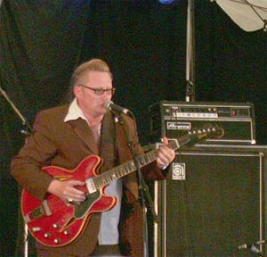
Открылся фестиваль в четверг сдвоенным концертом. Первым менее именитым номером выступал шведский блюзмен Sven Zetterberg в сопровождении шведского ансамбля с собственным солистом Knock-Out Greg & Blue Weather. Состав музыкантов не мог не порадовать. Два гитариста, бас с ударными и три дудки в классическом наборе: тенор, баритон, а также - труба. О том, что Зеттерберг умеет играть, меня предупреждали норвежские приятели-музыканты, и насколько я знаю, они на него молились еще тогда, когда учились играть сами. Однако результат превзошел все мои ожидания. Зеттерберг фантастически хорошо поет, почти треть концерта он провел в качестве вокалиста, отложив гитару. В репертуаре группы и Зеттерберга были самые разные музыкальные стили: блюз в современной форме с мощной гитарой и духовой секцией, наиклассический звук Чикаго в сопровождении гармошки, на которой замечательно еще одну треть концерта отыграл сам Грег-вышибала, а также самое интересное - соул без границ. Тут Свен, расхаживая по сцене с микрофоном в руках, почти уделал, на мой взгляд, самого Майти Сэма МакКлейна, если уж не по глубине голоса, то интонированием, эмоциональностью и чувством.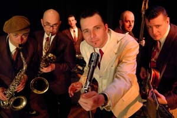
Гитарный стиль Зеттерберга - пример потрясающего знания, понимания и любви к блюзу. Он играет и смешивает самые различные блюзовые стили, добавляя к блюзу соул с великолепным вкусом. Помимо этого меня приятно порадовал подход к выбору репертуара этой компании из 8 человек. Все они - великолепные музыканты, и стремятся к тому, чтобы звучало здорово. Прекрасно аранжированные песни, никаких гитарных перепилов, а наличие трех гитаристов на сцене ни разу не показалось противоестественным. Очень хорошей мне показалась установка, которой так не хватает некоторым музыкантам. Главной целью Грега с компанией была музыка для публики при полном отсутствии ощущения сакральной важности происходящего. "Играем, как умеем, и надеемся, что вам будет весело." И в зале стояло полное и 100%-ное веселье или же неподдельное душевно-лирическое настроение во время грустно-медленных номеров.Ко всему следует добавить, что Knock-Out Greg & Blue Weather – очень известная группа блюзовых энтузиастов с 15-летней историей, которая непрерывно работает над своей музыкой, записала 5 альбомов, разъезжает по всему миру с концертами и периодически выступает с очень известными американскими и другими блюзменами.
Вторым концертом в первый день было выступление хедлайнера фестиваля Доктора Джона, везде прописанного большими буквами на втором месте после Бадди Гая.
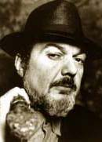
Группа Доктора состоит из трех черных музыкантов, которых с виду только что достали из самого традиционно-посконного черного кабака для своих. Естественно, я ожидал от них подлинного фанка или чего-нибудь подобного, удачно дополняющего рояльный талант белого фронтмена. Сам Др. Джон вышел при параде - увешанный вуду-амулетами, с тростью и когтями в ушах и бусах. Рояль был драпирован черной тканью с кладбища, на нем лежал череп, какая-то кость и что-то еще из этого мрачного набора. Сидел Доктор между хаммондом и ритуально оформленным роялем, играя то на них по очереди, а иногда и одновременно. Dr.John – очень хороший пианист, играет много усложненных по форме вещей собственного сочинения. И его репертуар никак нельзя назвать банальным, в отличие от того, что играют музыканты с амбицией попроще. Увы, сам концерт мне слабо запомнился, ибо я очень быстро заскучал от музыки вместе с большей частью публики. Пляски, конечно, были, ибо норвежцы, особенно в подвыпившем состоянии, народ очень веселый. Но такого буйства, как за полчаса до этого на концерте шведских блюзменов, определенно не было. Если я чего-то тонкого не в этой музыке не понимаю, то делаю это вместе с народом. Но ведь со мной не раз случалось, когда на концертах очень хороших музыкантов удовлетворение каких-то моих сверхутонченных музыкальных запросов как-то удивительно сочеталось с общенародным весельем в зале. Что-то на этом концерте было не так.
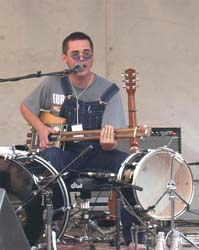
Молодой Richard Johnston из Мемфиса, Теннеси играет слайдом на необычном инструменте - разновидности бо-дидли (diddley bow), в жесткой демонической манере. Инструмент представляет собой сигарную коробку с двумя параллельными палками, выполняющими роль грифа, а вдоль них натянуты струны. Если я не ошибаюсь, то у него одна струна басовая (и очень низко, при этом, настроенная), а на другой половине грифа - еще две. Ричард - человек-оркестр играет жесткий ритм на басовой струне большим пальцем с надетым на него когтем-медиатором, на другую долю цепляет подобие аккорда на высоких струнах, двумя ногами же стучит по бочке и еще по одному барабану. Вокалист, солист, басист и ударник в одном лице. Звук получается очень мощным и убедительным. Разумеется, подобный набор инструментов накладывает на музыкальный стиль специфические ограничения. Песни построены на непростом ритмическом паттерне, его сочетании с действительно крутым вокалом, слайд играет, разумеется, упрощенными аккордами. Одним словом, как, к примеру, на двухрядной гармонике, что угодно не сыграешь. Что в этой музыке нравится, так это потрясающее чувство ритма, драйв и великолепный вокал. Гармония там весьма специфическая, с "демоническим" уклоном. Но из-за всех технических ограничений выходит недостаточно разнообразно, так что 30-минутное выступление, которое я послушал, хоть меня очень и увлекло, но по продолжительности было как раз в самый раз.
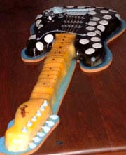
Бадди Гай выступал на сцене под названием Roadhouse - на берегу озера под гигантским куполом, позаимствованном у передвижного цирка. По агентурным данным, которыми я располагал еще до концерта, перед выступлением должно было произойти интересное событие. Жена старого Нутодденского знакомого Morten Gjerde, который несколько лет был лидером фестиваля, - самый известный в Норвегии дизайнер экзотических тортов. По случаю дня рождения Бадди, который состоялся за два дня до концерта в Нутоддене, она изготовила торт - точную копию его известной всем гитары в черно-белую горошину. Торт был выполнен в натуральную величину и со всеми возможными гитарными запчастями, включая струны, изготовленными из различных кондитерских материалов. Предыдущий страто-торт был изготовлен для Fender, отправлен в Америку, а его фотография красуется где-то на fender.com.
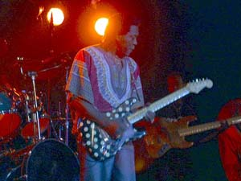
Выступление Бадди Гая во многом было похоже на то, что я слышал в Нутоддене в 99 году, правда понравилось мне несколько меньше. С тех пор у него сменился второй гитарист, новый играл хорошо и эмоционально, но старался быть похожим на Бадди, что было немного во вред общему разнообразию звучания. Публика встречала Бадди Гая очень горячо, и он это хорошо чувствовал. Выступление (уже могу сказать - как обычно) началось с его классических песен Damn Right, I've Got The Blues, Ten Long Years и других из того же ряда. На этих песнях в контакте с публикой Бадди завелся и играл соло на (как обычно) очень примоченной гитаре с жестким звуком и ураганным напором, так что, к сожалению, отдельных нот не было слышно абсолютно. Но эмоциональный настрой был очень мощным и все это почувствовали. В середине песни про Damn Right Бадди исполнил свой классический трюк, который так ненавидит security, - круговая прогулка по залу с гитарой. Причем, ушел он очень далеко - куда-то на улицу, потом прошел через пивной павильон и, возможно, обошел цирк кругом. Все это время из колонок на сцене неслось ураганное соло, передаваемое по радио. Второй частью концерта было классическое попурри из блюзовых и рок-стандартов. "А теперь посмотрим, как играет Eric Clapton" и дальше - песня Strange Brew в очень смешном полукомическом исполнении. Эту песню как и другие Бадди не заканчивал, а прерывал словами: "Oh, no, no, shi-i-i-t", странно при этом улыбаясь. К сожалению, по какой-то причине сильное вдохновение, которое присутствовало первые 40 минут концерта ушло, а неразборчивый эмоциональный и по-прежнему очень примоченный звук остался. Как результат, слушать дальше стало тяжело для уха и не безумно интересно.Возможно, у меня нет такого морального права, но я взял бы на себя смелость назвать талант Бадди Гая словами "гениальное сумасшествие". Во время концерта мне показалось, что и сам Бадди и зрители воспринимают его в этом качестве. Бадди - столь сильно потенциально заряженный музыкант, играющий абсолютно иррационально, так, что никто не знает, что он выкинет дальше. Может получиться либо гениально, либо совсем никак. Это чувствует и сам Бадди, странно улыбается на концерте, вскрикивает, когда поет, и делает многие странные неожиданные вещи, выясняя при этом по реакции публики, которая ждет от него очень многого, насколько хорошо у него получилось. Итого, я послушал два почти одинаковых по сет-листу концерта - в 99м и 2002м, но тогда было круто, а в этот раз - слабовато, на мой взгляд. А завтра может быть опять круто, ибо зависит это от иррационального гения, плоды которого невозможно прогнозировать. Конечно, в 99м году был интереснее второй гитарист, а также потрясающее выступление норвежца Кнута Рейерсруда, который тогда на джеме "играл Бадди Гая лучше и больше, чем сам Бадди Гай" (это не мои слова, хотя подобные мысли приходили и мне).
Вот такое у меня осталось впечатление, да простят меня блюзовые боги за нигилизм и отсутствие священного трепета перед святыми.
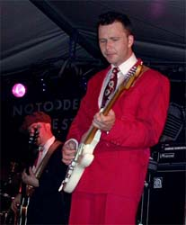
Послушав в первый день замечательную шведскую компанию Sven Zetterberg вместе с Knock-Out Greg & Blue Weather, на следующий день в промежутке между концертами нам с норвежскими приятелями удалось на час заглянуть на клубный концерт Грега с компанией. В первом отделении он играл свой репертуар с группой без Зеттерберга. На этот раз это был классический West Coast с тремя дудками, гармоникой и полуакустической гитарой. Сам Грег - отличный гитарист, отложил основной инструмент окончательно в сторону в тот вечер и взялся за гармонику. На ней он играл не менее замечательно, с самым правильным классическим звуком хроматики через баллет-микрофон, иногда переключаясь на диатоническую. На полуакустике играл "второй гитарист" - скромный парень по имени Jonas Goransson, который, как потом выяснилось, выступает с группой только несколько месяцев и собирается играть еще только пару. Гитарист Грега, играющий с ним более 10 лет, в последнее время очень устал и попросил его на время заменить.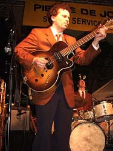
Импровизации вышедшего на замену Джонаса меня просто потрясли своей лаконичностью, сложностью, знанием и чувством этой музыки. Тягучий и чуть глуховатый звук полуакустики потрясающе сочетался с духовой секцией и остальной группой. От его гитары и концерта в целом я получил огромное эстетическое удовольствие. В West Coast есть очень много тонких нюансов, и чтобы их воспроизвести, нужно очень любить ее, переслушать очень много записей и отдать много душевных сил для того, чтобы научиться играть. В разговоре с Jonas-ом на следующий день меня приятно удивило и очень порадовало то, насколько он сильно бредит музыкой. Стиль West Coast и сопряженные вещи он стал тщательно изучать 4 года назад и с тех пор переслушал гигантское количество записей, раскапывая редкие пластинки и выискивая новые имена. Говорил он очень эмоционально, откровенно, с горящими глазами и большим желанием. А какие-то соображения, его личные и Джуниора Ватсона в его пересказе, были мне очень понятны интуитивно, и отражают, на мой взгляд, правильный подход к музыке. Постараюсь их пересказать: "Чтобы сформировать свой стиль, нужно переслушать большое количество разных музыкантов. Обучение как раз состоит в том, чтобы искать и слушать записи, пытаясь в разобраться в самых интересных вещах." "Не имеет смысла снимать длинные куски гитарных партий, нужно только брать основные идеи и их комбинировать. Длинный кусок невозможно гармонично вставить в импровизацию там, где это понадобится", "Когда ты играешь соло West Coast, самое главное – быть очень лаконичным, ни в коем случае – не переиграть, но при этом выразить все то, что ты хотел". "Не нужно задавать дурацкие вопросы о том, на каких струнах ты играешь или на какой гитаре. Это вопрос личного удобства для каждого музыканта, и это не имеет никакого особого значения.".Познакомились мы с героическим Джонасом, когда вместе с ним и журналистками из Blues News на следующий день после поразившего меня концерта Грега оказались "at the right place" – в выездном варианте небольшого, но известного в Осло клуба "Muddy Waters" на концерте Amund Maarud Band - быстро восходящей норвежской звезды. Молодого, но уже потрясающе хорошего гитариста Омунда Морюда, который играет со своим братом Хенриком Морюдом - ударником 18-ти лет (и он стучит не по годам хорошо!) и бас-гитаристом, кажется, из Америки.
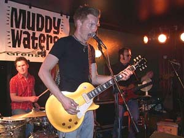
Периодически группа выступает с другим очень молодым и почти гениальным норвежским музыкантом - гармонистом Arne Rassmussen, который играл с Бюском три года, но потом ушел из группы доучиваться в школе. Именно эта компания - Amund Maarud Band & Arne Rassmussen в прошлом году привлекла все мое внимание своей музыкой, когда я случайно услышал их из окна библиотеки в процессе записи интервью с Масселвайтом. После чего я не мог долго переключить внимание обратно на разговоры Андрея и Чарли о блюзе в Чикаго. По словам знающих людей, Amund Maarud со своим юным братом заметно прибавили за прошедший год, в чем я смог убедиться лично. Гитарный стиль Омунда Морюда можно сравнивать со стилем Бюска во времена первых его альбомов. Но, разумеется, только отчасти. Общим является богатство блюзовых элементов, которые они, возможно, слышали у одних и тех же музыкантов, игравших в Норвегии. В качестве разницы я бы назвал более классическое гитарное блюзовое звучание. Гитара у Омунда звучит удивительно мягко, и в то же время очень проникновенно и разнообразно. Меня очень удивило на этом концерте то, как интересно может звучать гитарное трио, абсолютно не надоедая в течении целого концерта, абсолютно без перепилов, затронув самые чувствительные струны моей души. Песня-медляк "She loves me not" была так сыграна и спета, что чуть не выжала из меня вполне искреннюю слезу. Если честно, то мне редко доводилось слушать концерты чисто гитарных групп, которые бы совсем-совсем не грузили меня перепилами или не балансировали на зыбкой грани эмоциональности и излишнего количества жестких нот, извлекаемых из примоченной гитары. На самом деле, группа Морюдов совсем не подпадает под классический шаблон гитарного трио хотя бы тем, что Омунд играет на Гибсоне, делает это 100% разборчиво на не слишком примоченном звуке и много поет. А репертуар абсолютно свеж и не содержит ни одного замыленного стандарта типа "Honey Hush" или чего-то вроде.С половины концерта Омунда Морюда, продолжавшегося потом до глубокой ночи (более 3х часов подряд), мы с Джонасом вынуждено сбежали только по одной возможной в такой ситуации причине: через улицу начинался тот единственный концерт, который оказался еще круче, если такие сравнения вообще возможны.
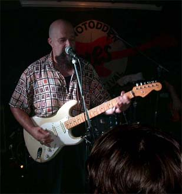
В небольшом тесном клубе Rallar's, где в 99м году играл Бюск, второй фестивальный концерт давал легендарный Junior Watson. Гитарист, который уже более 30 лет играет на западно-американской блюзовой сцене, 10 лет провел в составе Mighty Flyers и Рода Пьяццы, еще 10 лет вместе с Canned Heat, а около 5 лет назад начал выступать сольно со своей группой. За это время он успел поиграть и записаться у таких великих музыкантов как William Clarke (2 доаллигаторовских альбома), Hollywood Fats, Kid Ramos, гармониста Lynwood Slim и других персонажей того же круга. Музыка на этом концерте меня потрясла, проняла до глубины души и сделала меня счастливым. Пожалуй, такого концерта я еще не слышал. За долгие 30 лет пребывания в подобной музыкальной тусовке Junior Watson стал потрясающим мастером гитары. Музыка у Watson-а получается очень легкая, но с миллионом абсолютно подходящих под гармонию деталей. Сначала он раскачивает тебя ритмом, страшно заводным с безукоризненным звукоизвлечением, а потом накладывает на него соло с отличной фразировкой, захватывающими дух неустойчивостями, которое легко и совершенно ложится на этот ритм. Во время соло саксофона, Ватсон исполнял аккомпанимент на гитаре, а я смотрел и слушал это как пораженный. После конца соло саксофона, я хлопал Ватсону и, как оказалось несколько раз к ряду, вместе с публикой, которая естественным образом реагировала на соло героического, но одноголосого инструмента. Длинные последовательности из аккордов на гитаре, исполненных в минимальной аппликатуре, фантастически точно подчеркивали все нюансы развития гармонии. Ритмические фразы никогда не повторялись, не надоедали однообразием и все время содержали что-то новое. Мелодические линии в соло не были похожи на тупое обыгрывание гармонии, а были абсолютно разными, различались кардинально от песни к песне, были очень свежими, а порой и до колик смешными. Одним словом, там присутствовало все, чего обычно ждешь от хорошего гитариста, но в какой-то нереально-фантастически-идеальной форме. Я никогда не догадывался, что так хорошо можно играть... После этого вечера Джуниор Ватсон навсегда остался в моем сердце.
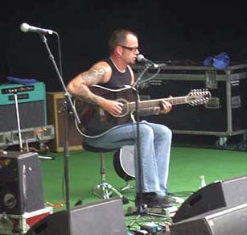
На сцене, располагающейся на берегу Нутодденского озера, прошел концерт норвежских исполнителей. Бьорн Бердж, которого я слышал уже в четвертый раз, играет слайдом на двенадцатиструнной гитаре, а также стучит ритм ногой, для чего у него всегда были различные приспособления. Раньше это была специально изготовленная коробка с 4мя акустическими звукоснимателями, а в этом году он уже выступал с каким-то приспособлением промышленного производства, напоминающим педаль. Музыка Берджа - это мастерски исполненные ритмичные композиции с очень мощным вокалом с демоническим настроением. По стилистике - это некий интересный сплав классического блюза Роберта Джонсона и современных элементов, включающих самую малость гранжа и цитат из Red Hot Chili Peppers. Но, несмотря на пугающие аналогии, звучит это отлично.Разумеется, музыку Берджа имеет смысл сравнить с тем, что играет Ричард Джонстон. Общее - это жесткий металлический очень ритмичный звук и напряженный вокал. Кто-то довольно точно обозвал этот стиль Джонстона и Берджа как "punk country blues". Возможно, Джонстон из Мемфиса самую малость выигрывает в ритме и напряжении, но благодаря тому, что Бьорн играет все-таки на гитаре, у него получается несомненно разнообразнее и поэтому интереснее.
Вообще, этот фестиваль изобиловал музыкантами, играющими слайдом и без него в жесткой ритмичной и в чем-то дикой манере. Джеймс Мафус - белый слайдовый гитарист - открывал выступления Бадди Гая со своей группой Knock Down Society. По манере исполнения этот гитарист был максимально далек от того, что играют слайдом аккуратисты-блюзрокеры. Это был жесткий сумбурно-беспорядочный блюз, который своими корнями растет из сугубо черной музыки, максимально далекой от филармонии. Это было интересно, но, возможно, не для полуторачасового концерта.
Еще одной слайд-гитаристкой на фестивале была югославская Ana Popovic, которая выбралась не так давно из под крыла постсоциалистической родины, стала записываться и набирать популярность в Америке. Во многом, секрет ее успеха, как мне кажется, в том, что она - одна из немногих женщин слайд-гитаристок, умеющих круто и с драйвом зарубать на своем инструменте. Для журналистов героическая внешность Анны была настоящей находкой, поэтому все они поспешили в первый же день сделать различные фото, которыми были завешаны развороты фестивальных блюзовых выпусков местных газет. На мой взгляд, играет Анна неплохо, группа у нее на довольно высоком уровне, а единственным недостатком является то, что она немного перепиливает на гитаре в блюз-роковом угаре.
Еще один норвежский музыкант, который набирает обороты в последние годы - это Kare Virud. Ему уже почти 40 лет, но музыкой опять начал заниматься не так давно и успел обрести изрядную популярность. Объясняется это, возможно, тем, что он нашел себе определенную никем не занятую в Норвегии нишу (но переполненную у нас) в богатом разнообразии блюзовых жанров. Он исполняет популярные блюзовые стандарты, да еще и в норвежском переводе. Это был единственный музыкант на фестивале, от которого я услышал песню про Хучи-Кучи Мэн-а (по-норвежски, разумеется) за все четыре фестиваля, на которых я побывал. Некоторая халтурность подхода настолько напомнила мне многие вещи, которые я слышал на родине, от чего меня не один раз передернуло. Его выступление (как и небольшой фрагмент, услышанный на прошлом фестивале) - одна из немногих вещей, которые мне явно и активно не понравились. Хотя, нужно признать, уровень у его группы довольно высокий, и особенно это касается второго гитариста, который исполнял наиболее интересные на этом концерте партии. У него какой-то растрепанно-замученный вид (имидж), и у меня уже во второй раз создалось впечатление, что он попал в группу как в кабалу к старому блюзмену-песеннику то ли за деньги, то ли за славу, то ли за какие-то грехи.
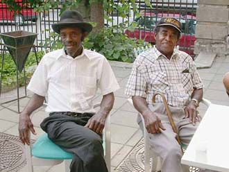
T-Model Ford и Paul "Wine" Jones - два совершенно афро-американских немолодых исполнителя, по очереди играли в первой части концерта Бадди Гая. Они оба - друзья-приятели с лейбла Fat Possum Records, отличающегося подбором диких черных блюзменов, наиболее известными из которых являются Jim Kimbrough и R.L. Burnside.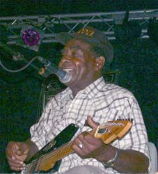
Обязательной отличительной чертой музыкантов этой компании, которых я видел и слышал, является нетронутая бешеная черная энергия в сочетании с абсолютным отсутствием дурного белого влияния, ну и, возможно, излишней музыкальной образованности, которая проявляется у черных музыкантов, исполняющих более сложные музыкальные формы типа фанка, элементов рока и джаза и т.д. (Возможно, это тот редкий случай, когда мне кажется уместным что-то делить в блюзе на черное и белое.). Оба музыканта пели песни, играя громкие и не совсем аккуратные аккорды на электрической гитаре, ревущей через усилитель на весь огромный зал, бесконечно повторяя рефрены в очень длинных песнях, и получая от процесса удовольствие вместе с публикой. Сопровождающим инструментом были только ударные, за которые посадили мускулистого норвежского барабанщика с трешовой выучкой, который очень прямолинейно стучал на протяжении длинных песен. Задача у него была сложная, ибо блюз, который играли и пели T-Model Ford и Paul Jones, был очень архаичной формой "блюза без правил". Зато, правда, если кто-то мазал, то это не создавало никакой проблемы. Гармоническая схема в квадрате была часто упрощенной, а смена аккордов могла происходить с отставанием или опережением на полтакта. В сравнении с этим буги Джон Ли Хукера можно считать вылизанной аккуратной музыкальной формой. Выступления эти были чрезвычайно интересными, но, вполне естественно, немного однообразными, что однако никак не испортило мне впечатления.А теперь о том, с чем у меня не сложилось. Третьим хедлайнером фестиваля был легендарный Tony Joe White, игравший в одиночестве на страте и гармонике в подставке. К огромному сожалению, мне удалось послушать только одну хорошую песню. Дело в том, что посетить 5 концертов за два главных фестивальных вечера представляется невозможным, поэтому как и всегда пришлось идти на жертвы и секвестрировать собственную программу. Аккомпанировал на басу американской звезде в нескольких песнях Bjorn Holm - наш замечательный приятель, который посетил Москву в мае с Бюском и его True Believers. А Martin Windstad - великолепный ударник из той же упомянутой звездной группы выступал вместе с одним из самых интересных норвежских гитаристов Кнутом Рейерсрудом в специальной соул-блюзовой программе. Сам Кнут играет на гитаре потрясающе. Он провел всю молодость начиная с 16-летнего возраста в Чикаго, играя и записываясь с мировыми блюзовыми звездами, включая Бадди Гая и Джуниора Уэллса, в качестве молодого очень талантливого гитариста. Единственным НО с моей точки зрения является то, что он в своем сольном творчестве на родине слишком увлекается замешанной на блюзе психоделикой, почти не оставив места для более простых блюзовых форм, где он мог бы раскрыться как блюзовый импровизатор на полную катушку. Этот концерт как раз должен был продемонстрировать обратное, и я готовился с большими ожиданиями к нему еще задолго в Москве. Но утром того дня со мной произошла серия каких-то идиотских событий, от которых я был в недоумении до вечера, когда обнаружил, что мои часы самопроизвольно съехали на два часа назад. В результате я пропустил концерт, и ожидая его получил толику неприятных эмоций слушая Kare Virud. Однако вечером все мои огорчения были забыты абсолютно на концертах Junior Watson и Amund Maarud Band, ибо эти два концерта составили для меня основное фестивальное впечатление, и даже только их более чем достаточно, чтобы вспоминать о фестивале, как об исключительном музыкальном переживании.
Ну а теперь после конкретного разговора про "понравилось/не понравилось" мне хочется немного пофилософствовать и зафиксировать полуинтуитивные мысли, которые приходят на концертах вместе с впечатлениями от музыки. Если рассуждения Вам в тягость, или Вы хотели бы почитать именно про фестиваль, можете смело пропустить эту главку.
Общий вывод, который напрашивается уже 4й год подряд на то, чтобы его сформулировать: удовольствие от музыки часто получаешь не там, где его специально ждешь (или ожидают его все остальные вместе с организаторами) - на концертах, например, блюзовых хедлайнеров. Порой не столь официально-популярные классные музыканты, находящиеся в периоде творческого расцвета, способны потрясти на концерте так, что на сердце остается томящее воспоминание, а на язык приходят эпитеты более выразительные, чем просто "хорошо".
Развивая эту мысль, я бы схематически выделил два присущих признака, которые могут отличать интересную нам по разным причинам музыку. Условно их можно обозвать как "оригинальность" и "знание и чувство музыки". Причем, в той или иной степени эти признаки могут встречаться как вместе, так и совершенно по отдельности.
Оригинальность в данном контексте - это изобретение чего-то нового в музыке, в частности - в блюзе, а также привнесение в него совершенно новых элементов. Источником вдохновения может служить что угодно: песни, которые пела мама в детстве, элементы чужой народной культуры, таинственное самозарождение нового в гениальной голове музыканта и т.д. Возможно, что важным тут является некоторая нетронутость сознания заезженными и общепринятыми музыкальными шаблонами, что иногда (только иногда!) может даже потребовать ограниченности музыкальных познаний. Однако, вклад подобных музыкантов бывает неоценим. Вероятно, именно поэтому у любителей блюза так ценится в нетронутом первозданном виде черная культура, которая дала так много для современной музыки - джаз, блюз, соул и все остальное. Говорят, что блюз мог зародиться только там и так, как это на самом деле произошло - в деревне и на плантациях, без влияния каких-либо мюзиклов, оперы, классической музыки и музыкального образования.
Многих черных музыкантов мы продолжаем слушать и безгранично уважать именно потому, что они в отличие от иных из другой среды продолжают точно воспроизводить те элементы блюза, которые считаются определяющими и выделяющими блюз как самоценный жанр. Это и неустойчивая минорно-мажорная гармония, обязательный свинг в ритме, также подлинный blue feeling в тексте и импровизации, и многое другое, что трудно сформулировать. Питаясь из того же источника, что блюз породил, они исполняют блюз "по-блюзовому" как и их старшие братья. Именно поэтому на полке у нас на самом почетном месте стоят пластинки музыкантов, сформировавших любимый музыкальный жанр, хотя сегодня, вероятно, найдутся многие, кто способен виртуозней или интересней сыграть их же репертуар, возможно даже вполне правильно и "по-блюзовому".
И вот тут уместно перейти ко второму условному признаку интересной нам музыки. Это - "знание музыки". Вслед за черными отцами-основателями появилось много музыкантов, которые очень любят их творчество, тратят очень много времени на его изучение, а также знают очень много соприкасающихся стилистически вещей, а иногда и отягощены знанием музыкальной грамоты. Для них цвет кожи, социальная среда или национальность не имеет абсолютно никакого значения, ибо пластинки с давних пор доступны всем, кто захочет их найти и послушать. Такие музыканты находятся в "контексте" того, что происходит в блюзе в данный момент, и того, что было сыграно раньше. Их всегда очень интересно слушать, и, в особенности, на концерте, потому, что они привносят большое разнообразие, комбинируя разные блюзовые элементы, услышанные у многих отцов основателей. Особенно талантливые "знающие" музыканты могут породить что-то принципиально новое, комбинируя, расставляя акценты или неожиданно стилистически сплавляя то, что кто-то уже когда-то сыграл. Многие классические блюзовые композиции получают вторую жизнь в исполнении талантливых музыкантов "второго поколения". А за счет сплава стилей, нового взгляда на классику рождается новое в музыке. Что мне кажется очень важным, ибо это есть залог того, что блюз не помрет и будет развиваться дальше, используя отчасти новые достижения цивилизации, такие как свободный доступ к мировой фонотеке, отсутствие границ для культуры и т.д. Чтобы в этом увериться, нужно еще раз посмотреть на людей с горящими глазами, которые с фанатизмом слушают блюз и продолжают его играть. А таких людей много, если не у нас, то в Америке или в той же Норвегии, я их сам там видел.
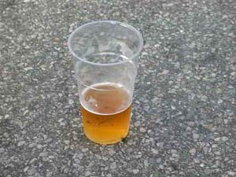
Ну а теперь, если спуститься с высот на землю, учтя все умные рассуждения, для себя я могу сделать несколько выводов, которые и без всей этой логики интуитивно кажутся мне совершенно достоверными. Я абсолютно не разделяю точку зрения о том, что блюз уходит с концами вместе с теми, кто его придумал в Дельте или в Чикаго. Хотя, если воспринимать его как застывший жанр в тех рамках, то – вполне возможно. Но я совершенно не думаю, что основатели блюза, которым мы склонны безгранично доверять по части музыкального вкуса, были бы рады, если бы узнали, что блюз как жанр хотят законсервировать в состоянии, в котором они его играли. Ибо сами они были отчаянными авантюристами-инноваторами в музыке той эпохи. Преимуществом был мощный заряд черной музыкальной культуры, но некоторым недостатком перед современными исполнителями - ограниченность "музыкального знания" по разным причинам. Исполнявшие "country blues" не знали, к примеру, фанка, свинга, рока и т.д. А одаренный современный музыкант, который много слушает и очень любит музыку, имеет все шансы стать новым классиком жанра.Другим практическим выводом может быть то, что часто интереснее слушать на концерте неизвестную крутую группу в расцвете творческих сил, нежели чем орденоносного классика, совершившего когда-то давно подвиг для музыки и записавшего два хороших, а потом еще пять "никаких" альбомов. Кроме того, как оказывается, в ряде стран существует множество великолепных "клубных" групп, которые не выпустили ни одной популярной пластинки только потому, что их творчество недостаточно "оригинально", но при этом одновременно очень свежо и интересно. Несмотря на отсутствие мировой известности на концертах они трясут в блюзовом угаре своих умирающих от счастья слушателей, а узнать о них из американских чартов блюзовых пластинок – абсолютно невозможно. Если Вы собрались на концерт, не сортируйте блюзменов на "первый" и "второй" классы традиционным способом, ибо можно досадно ошибиться...
Норвегия – совсем небольшая страна, в ней живет всего лишь 4 с половиной миллиона человек. Но по какой-то причине музыка стала для норвежцев важной частью их жизни. Если измерить число музыкантов или меломанов на душу населения, то полученный показатель зашкалит и заметно превысит аналогичный у нас в стране, к примеру. Почему-то норвежцы избрали музыку в качестве своего национального развлечения, такого же, как футбол у итальянцев или водка у русских. Любовь к блюзу в Норвегии принимает организованные формы и даже поддерживается государством и местными властями. Для иллюстрации приведу поразившее мое воображение высказывание предыдущего премьер-министра Норвегии Йенса Столтенберга, который открывал прошлогодний Нутодденский фестиваль 30-минутной речью перед публикой. Вот оно в примерном пересказе: "Я считаю Нутодденский Блюзовый Фестиваль чрезвычайно важным событием в стране потому, что он способствует популяризации и развитию блюза в Норвегии". Вот как! С другой стороны, народная любовь к блюзу обеспечивает существование прочной коммерческой основы для функционирования блюзовой системы, стимулируя людей делать для блюза какие-то вещи не только на личном энтузиазме.
Более 5 лет назад блюзовые клубы и музыканты основали Norsk Blues Union – Норвежский Блюзовый Союз, и примерно тогда же стал выходить периодический (5 раз в году) толстый блюзовый журнал Blues News.
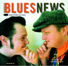
Основной задачей союза и журнала является установление связей между музыкантами, клубами и теми, кто любит слушать музыку. Помимо разноформатной рекламы в журнале каждый блюзовый клуб, группа или фестиваль за небольшую плату регулярно вносится в широко доступный каталог Блюзового Союза, содержащий краткую, в том числе и контактную информацию о них. Благодаря подобному каталогу организация блюзовых концертов или составление программы местного фестиваля является не очень сложным делом. Цифры из этого каталога поражают воображение! В Норвегии действует 75 блюзовых клубов, 70 из которых недвусмысленно содержат слово "блюз" в своем названии. Блюзовый клуб есть почти в каждой деревне. В них регулярно играет 84 блюзовые или околоблюзовые группы. Каждый год в Норвегии проходит 22 больших и маленьких блюзовых фестиваля, по которым непрерывно разъезжают с концертами американские, английские, норвежские, шведские и другие музыканты. Самым крупным из них является фестиваль в Нутоддене, имеющий 15-летнюю историю. В небольшом провинциальном городе, в котором живет всего 12000 человек, на время фестиваля население увеличивается в 4 раза. А все когда-то началось с того, что в этом промышленном городке закрылся гигантский сталелитейный завод, и полторы тысячи человек остались без работы. Не желая вечно пребывать в депрессии, жители города через пару лет придумали себе отличное занятие – блюзовый фестиваль, на который трудятся, главным образом, жители Нутоддена, проделывая каждый год гигантскую работу.Подобное развитие блюзовой жизни приносит прекрасные плоды. В Норвегии есть ряд блюзовых музыкантов поистине мирового уровня. Из упомянутых раньше – это Vidar Busk & His True Believers, сыгравшие этой весной три потрясающих концерта в Москве, Bjorn Berge, Amund Maarud Band, Knut Reiersrud, Reidar Larsen и другие. Причины этого мне вполне понятны. Дело в том, что на творческое развитие музыканта определяющее влияние имеет та хорошая музыка, которую он слышит в записях и, главное, на концертах. Вдохновленные услышанным молодые люди берутся за гитары и пытаются что-то играть в том же духе, сначала из подражания. Упомянутый выше Knut Reiersrud в раннем детстве услышал Бадди Гая по телевизору и с этого момента решил посвятить себя блюзу. Можно считать, что он добился своего. Если подойти формально, его получасовое выступление с Бадди Гаем на равных перед 5-тысячной аудиторией вполне может считаться свершением детской амбициозной мечты. Но, что важно, Кнут Рейерсруд играет сейчас уже другую музыку, превратившись во взрослого сильного музыканта. Примерно так наиболее талантливые дети, купившие себе первую гитару, потом становятся известными самостоятельными музыкантами. Но и для развития их собственного стиля определяющее и самое главное значение имеет то, насколько много разной и качественной музыки они слышали. По этой части жители Америки и теперь Норвегии имеют больше шансов стать интересными блюзменами, чем кто-либо другой на свете.
Что еще бросается в глаза в Норвегии – это стилистическое отличие того, что играют в среднем там, и в среднем - в России. У нас порой бедность музыкальных блюзовых познаний, которые ограничиваются наиболее известными и доступными музыкантами, такими, как Stevie Ray Vaughan или Johnny Winter, приводит к появлению безграничного числа блюз-роковых жестко-гитарных трио, которые в своем творчестве ориентируются друг на друга. Остальная молодежь вообще уходит играть русский рок, который так у нас в стране популярен. В Норвегии новоиспеченный гитарист бежит в магазин покупать не страт, а полуакустику, и хочет играть не рок или жесткий блюз-рок, а блюз с легким свинговым оттенком, мечтая о группе с дудками и гармоникой. Что даже по обезличенно-усредненному счету кажется мне более привлекательным.
Собственный блюз в стране развивается только на благодатной почве, что и произошло в Норвегии, не имеющей изначально никаких общих с блюзом традиций. А мы будем надеяться, что у нас в стране все условия для этого также появятся в той или иной степени. Благодаря прозрачности границ для культуры и изменениях в экономике, которые позволят привозить в Россию настоящих музыкантов, у которых наши талантливые ребята будут учиться играть блюз.
Федор Романенко, 19.08.2002